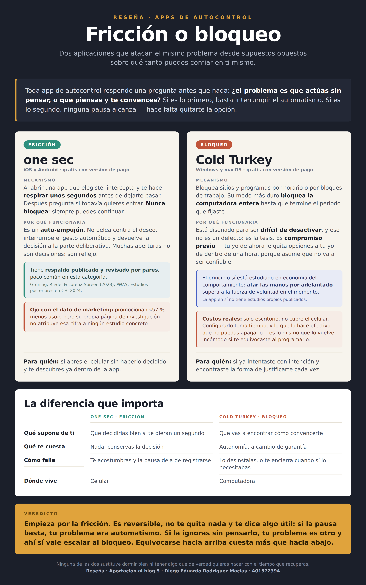
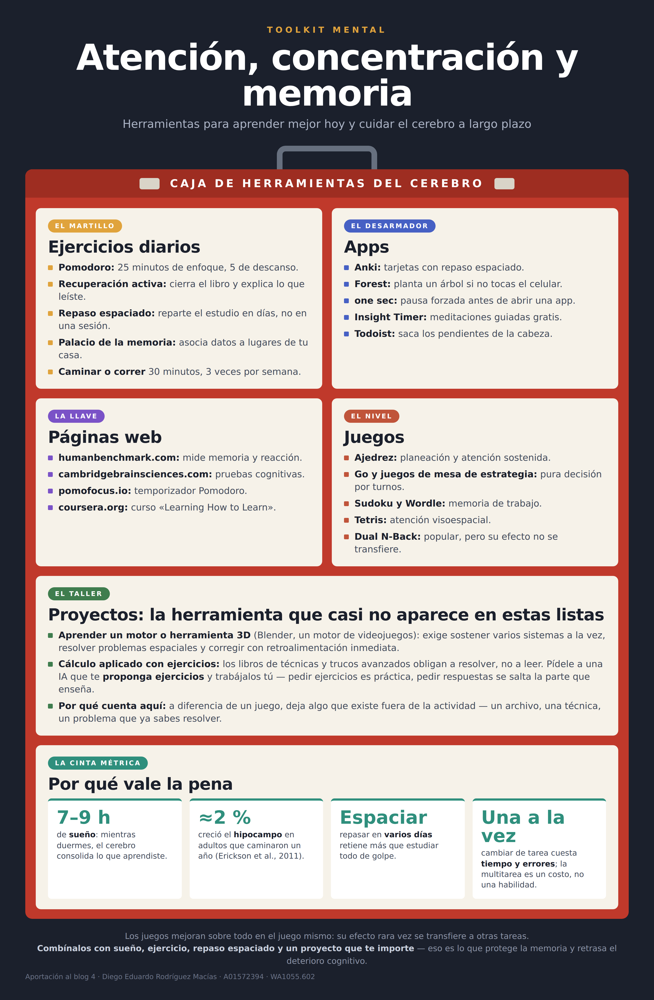

Registro de las aportaciones del curso. Cada entrada se publica con su fecha y conserva lo que entregué, sin editar después.
Aportación 5 · Reseña
Fricción o bloqueo
one sec y Cold Turkey resuelven el mismo problema desde supuestos opuestos sobre qué tanto puedes confiar en ti mismo.
15 de octubre de 2026 · Diego Eduardo Rodríguez Macías
Toda aplicación de autocontrol contesta una pregunta antes de hacer cualquier otra cosa: ¿el problema es que actúas sin pensar, o que piensas y te convences? Si es lo primero, basta con interrumpir el gesto automático. Si es lo segundo, ninguna pausa va a alcanzar, porque la vas a atravesar con un argumento.
Busqué dos aplicaciones que representaran cada respuesta. No son dos categorías excluyentes ni dos tipos de persona: son dos mecanismos distintos, y cuál conviene depende de cuál de los dos problemas tengas.

Figura 1. Comparación de ambas aplicaciones. Elaboración propia a partir de la documentación oficial de cada producto y del artículo de Grüning et al. (2023).
one sec: interrumpir el gesto
Cuando abres una aplicación que tú elegiste marcar, one sec intercepta la apertura y te hace respirar unos segundos antes de dejarte pasar. Al terminar, pregunta si todavía quieres entrar. Nunca bloquea: siempre puedes continuar.
Lo interesante es el supuesto detrás. No pelea contra el deseo ni te quita la opción: interrumpe el automatismo y devuelve la decisión a la parte deliberativa. Parte de que muchas aperturas de aplicación no son decisiones sino reflejos, y que si te devuelven un segundo, decides distinto.
Está disponible en iOS, iPadOS, Android y como extensión de navegador en escritorio. Tiene versión gratuita con funciones limitadas.
Cold Turkey: decidir el límite antes
Bloquea sitios y programas por horario o por bloques de trabajo. En su modo más estricto bloquea la computadora entera hasta que termine el periodo que fijaste.
Lo que lo define es que está diseñado para ser difícil de desactivar, y eso no es un defecto de usabilidad: es la tesis del producto. Funciona como un dispositivo de compromiso — tu yo de ahora le quita opciones a tu yo de dentro de una hora, porque asume que ese no va a ser confiable. Es el mismo principio que estudian Bryan, Karlan y Nelson (2010) en economía del comportamiento: atarse las manos por adelantado supera a la fuerza de voluntad en el momento.
Solo funciona en Windows y macOS. No cubre el celular, que para muchos es justamente donde está el problema.
La diferencia que importa
Enfoque comparado
one sec · pausa
Cold Turkey · bloqueo
Qué supone de ti
Que decidirías bien si te dieran un segundo
Que vas a encontrar cómo convencerte
Decisión y autonomía
Durante la pausa puedes reconsiderar y elegir continuar o salir
Las restricciones se acuerdan antes; el candado limita los cambios
Qué te cuesta
Nada: conservas la decisión en todo momento
Autonomía, a cambio de una garantía
Cómo falla
Te acostumbras y la pausa deja de registrarse
Lo desinstalas, o te cierra el acceso que sí necesitabas
Dónde vive
Celular y navegador de escritorio
Windows y macOS; no cubre el celular
Tabla 1. Se comparan modos concretos de cada herramienta, no dos categorías excluyentes ni rasgos de personalidad.
Qué sabemos y qué no
one sec promociona una reducción del 57 % y esa cifra sí está documentada, pero importa mucho qué mide exactamente.
−57 %aperturas reales de las aplicaciones seleccionadas, no tiempo total de pantalla. Son dos métricas distintas y la diferencia no es menor (Grüning et al., 2023).
El estudio de campo del que sale ese número fue exploratorio: participantes autoseleccionados, sin grupo de control. Empezaron 719 personas y el análisis principal se hizo con las 280 que completaron el seguimiento, lo cual es una pérdida considerable. Y conviene saberlo: uno de los autores es el creador de la aplicación.
El mismo trabajo incluye un experimento aleatorizado aparte, con unos 500 participantes, que separó los componentes de la intervención. Ahí el efecto mayor vino de ofrecer explícitamente la opción de desistir; el retraso también ayudó, pero el mensaje de reflexión por sí solo no fue efectivo. Eso es más informativo que la cifra grande, porque dice qué parte del mecanismo hace el trabajo.
Cold Turkey no tiene estudios propios. Lo que existe es el marco conceptual de los dispositivos de compromiso, que está bien estudiado, pero eso valida el principio y no esta implementación en particular. La documentación del producto describe funciones; no aporta un ensayo de eficacia.
Veredicto
Empieza por la fricción. Es reversible, no te quita nada y te da información útil: si la pausa basta, tu problema era automatismo. Si la atraviesas sin pensarlo, tu problema es otro y ahí sí vale escalar al bloqueo. Equivocarse hacia arriba cuesta más que hacia abajo.
Empieza con una configuración breve y revisable, observa qué te ayuda y ajusta el modo a tu contexto. Ninguna de las dos elimina la necesidad de hábitos, de descanso ni de tener un propósito para el tiempo que recuperas. Esta valoración es mi opinión a partir de lo que encontré, no una recomendación clínica.
Grüning, D. J., Riedel, F., & Lorenz-Spreen, P. (2023). Directing smartphone use through the self-nudge app one sec. Proceedings of the National Academy of Sciences, 120(8). https://doi.org/10.1073/pnas.2213114120
one sec. (s. f.). Cut your screen time in half. Recuperado el 15 de octubre de 2026, de https://one-sec.app/
Ejercicios, apps, páginas, juegos y proyectos para sostener la atención y cuidar la memoria a largo plazo.
15 de octubre de 2026 · Diego Eduardo Rodríguez Macías
Armé esta caja de herramientas con cinco compartimentos: ejercicios para hacer a diario, aplicaciones, páginas para medir y practicar, juegos, y uno que casi nunca aparece en listas de este tipo pero que creo que es el más importante.

Figura 1. Toolkit de atención, concentración y memoria. Elaboración propia.
Por qué agregué el compartimento de proyectos
Mientras buscaba me topé con algo que cambió lo que tenía sentido recomendar: el efecto de los juegos de entrenamiento cerebral no se transfiere. Mejoras en el juego que practicas y esa mejora casi no aparece en otras tareas. Simons et al. (2016) revisaron la literatura completa de programas comerciales y encontraron evidencia escasa de beneficios fuera de lo entrenado; el Dual N-Back, el caso más famoso, tuvo resultados iniciales prometedores y después fallos de replicación.
Eso no los vuelve inútiles. Un juego de estrategia por turnos exige atención sostenida en lugar de fragmentarla, que es bastante mejor que el desplazamiento infinito en redes. Pero no te vuelve mejor en otra cosa, y conviene saberlo antes de invertirle horas creyendo que sí.
Lo que sí construye capacidad es aprender algo difícil de verdad. La prueba que separa una cosa de la otra: ¿la actividad deja algo que exista fuera de ella? Un archivo, una técnica, un problema que ahora sabes resolver. Si la respuesta es no, es entretenimiento, y está bien que lo sea mientras no lo confundas con entrenamiento.
Por eso el quinto compartimento es el taller. Aprender Blender o un motor de videojuegos obliga a sostener varios sistemas a la vez y a corregir con retroalimentación inmediata, y lo que construyes sigue ahí cuando cierras el programa. Los libros de cálculo aplicado funcionan mejor que los de teoría pura porque obligan a resolver, y ahí la inteligencia artificial tiene un uso legítimo si le pides ejercicios y los trabajas tú, en lugar de pedirle respuestas.
El panel de datos recoge lo que más efecto tiene y menos se parece a una herramienta: dormir, moverse, espaciar el repaso y hacer una cosa a la vez. Nada de eso se descarga, y sospecho que por eso existe el mercado de aplicaciones que prometen lo mismo.
Referencias
Erickson, K. I., Voss, M. W., Prakash, R. S., Basak, C., Szabo, A., Chaddock, L., … Kramer, A. F. (2011). Exercise training increases size of hippocampus and improves memory. Proceedings of the National Academy of Sciences, 108(7), 3017–3022. https://doi.org/10.1073/pnas.1015950108
Simons, D. J., Boot, W. R., Charness, N., Gathercole, S. E., Chabris, C. F., Hambrick, D. Z., & Stine-Morrow, E. A. L. (2016). Do "brain-training" programs work? Psychological Science in the Public Interest, 17(3), 103–186. https://doi.org/10.1177/1529100616661983
Aportación 3 · Esquema
Lo que se siente fácil
Las dos técnicas de estudio que más usa todo el mundo son las dos que menos funcionan, y hay una razón para que se sientan bien.
24 de octubre de 2026 · Diego Eduardo Rodríguez Macías
Cuando busqué sugerencias para aprender mejor esperaba una lista de consejos sueltos. Lo que encontré fue mejor: una revisión que evaluó diez técnicas de estudio con la evidencia disponible y las ordenó por utilidad. Dunlosky y sus colegas (2013) las clasificaron en tres niveles, y el resultado tiene una incomodidad que vale la pena mirar de frente.
Subrayar y releer, que es lo que hace casi todo el mundo, quedaron en el nivel más bajo.
Figura 1. Sugerencias para aprender mejor, ordenadas por nivel de evidencia. Elaboración propia a partir de Dunlosky et al. (2013).
Por qué lo que no funciona se siente tan bien
Esta es la parte que me pareció más útil de entender. Cuando relees un capítulo por tercera vez, el texto te resulta cada vez más familiar, y el cerebro interpreta esa fluidez como señal de que ya lo sabes. Pero reconocer no es lo mismo que recuperar. En el examen nadie te muestra el texto: te pide que lo saques de la memoria, que es exactamente la operación que no practicaste.
De ahí sale la regla que resume todo el esquema: si estudiar se siente cómodo, probablemente no estás estudiando. Las técnicas que funcionan se sienten más difíciles mientras las haces, y esa dificultad es justamente el trabajo.
Lo que cambié yo
Dejé de releer apuntes y empecé a escribir el tema con mis propias palabras, cerrando antes el material. Lo noté con un trabajo sobre la organización interna de una memoria RAM: después de redactarlo pude explicar de dónde salía cada dato del encapsulado sin volver a consultarlo, cosa que no me pasaba cuando solo leía.
Es práctica de recuperación disfrazada de tarea, y funciona por la misma razón.
Cómo empezar sin rehacer todo
Las dos de utilidad alta no piden material nuevo ni más horas, solo cambiar el orden de lo que ya haces. En lugar de leer el tema otra vez, cierra el cuaderno y escribe lo que recuerdes; lo que falte es exactamente lo que hay que repasar. Y en lugar de dejar el estudio para la víspera, parte el mismo tiempo total en sesiones separadas.
Las de utilidad moderada valen la pena cuando ya tienes esas dos. Y las de utilidad baja no hay que abandonarlas del todo: subrayar sirve para marcar qué releer después, siempre que no se confunda con haber estudiado.
Una precisión sobre la clasificación. "Utilidad baja" no significa que no sirvan nunca, sino que la evidencia de que mejoren el aprendizaje en distintas materias, tipos de estudiante y formatos de examen es débil. Dunlosky et al. evaluaron cada técnica en esas cuatro dimensiones, no solo en si funciona alguna vez.
Referencias
Dunlosky, J., Rawson, K. A., Marsh, E. J., Nathan, M. J., & Willingham, D. T. (2013). Improving students' learning with effective learning techniques: Promising directions from cognitive and educational psychology. Psychological Science in the Public Interest, 14(1), 4–58. https://doi.org/10.1177/1529100612453266